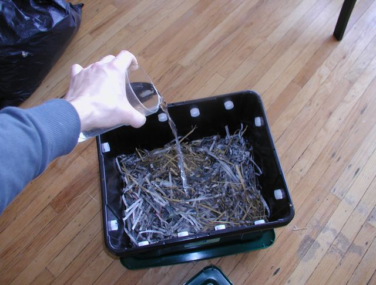
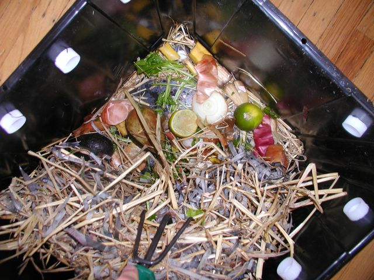
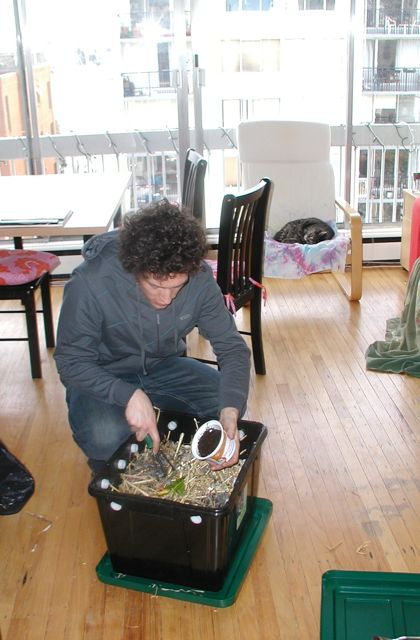
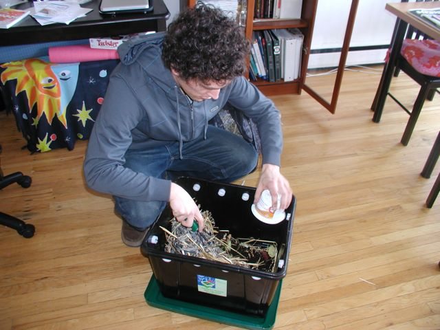
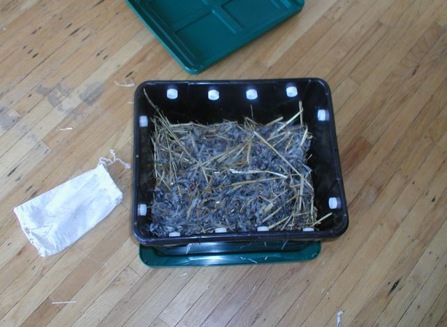
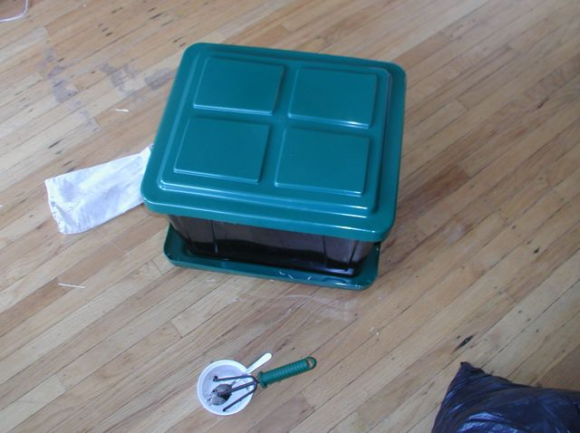

I live in an apartment which makes it harder to do your composting. However with vermicomposting, it can still be done in an apartment. The compost is in a small plastic container that can fit under your sink or on a balcony. Many people are worried about the smell, but there really is no bad small if it is properly taken care of. When you open the bin you will smell a bit of an earthy smell from the new compost.
Why compost?
The compost bin is made from plastic with ventilation holes on the top and a drainage tray on the bottom.
The key to keeping a compost from smelling is to have a carbon layer covering everything. I used a mixture of straw and newspaper strips, but leaves also work. The carbon source needs to be wetted, but not soaked.
What can be composted is any uncooked vegetables. This means all the scraps from cutting the veggies for your meals.
The worms of course are the important part. I also add a little dirt to the compost to get some bacterial cultures started. This means no sanitized potting soil, but dirt either from an indoor plant or from anywhere outside.
So now we have our vegetables on the bottom covered with a little dirt and the carbon layer on top.
Make sure all the composting vegetables are always covered. This means more leaves or paper needs to be added as the worms slowly eat the carbon source.
The compost bin is closed and can easily be stored in an apartment.
It is important to not overfeed the worms, otherwise the compost might start smelling. The worms should only be fed once a week to keep them from feeling disturbed. In the first four weeks they should only be fed what fits into a 1 liter container. After that they can be fed double that amount.
I would like to thank the Urban Farmer for providing a course on vermicomposting, and the City of Vancouver for subsidizing it. The Urban Farmer can be reached at their Compost Hotline to schedule a course or to provide composting information.